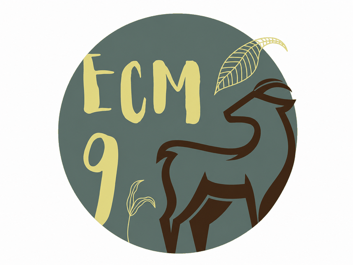
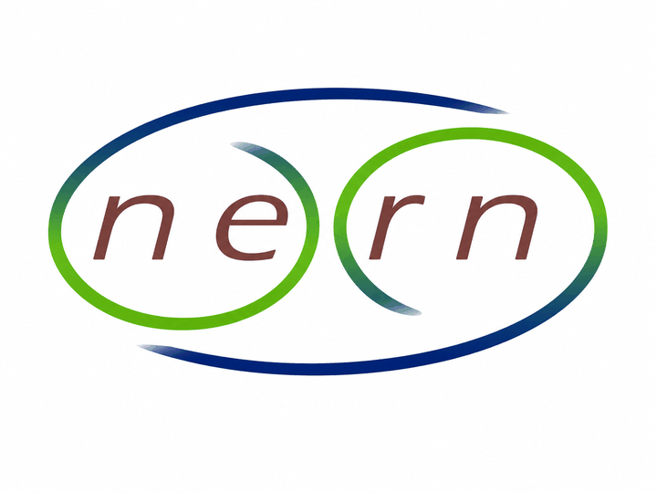
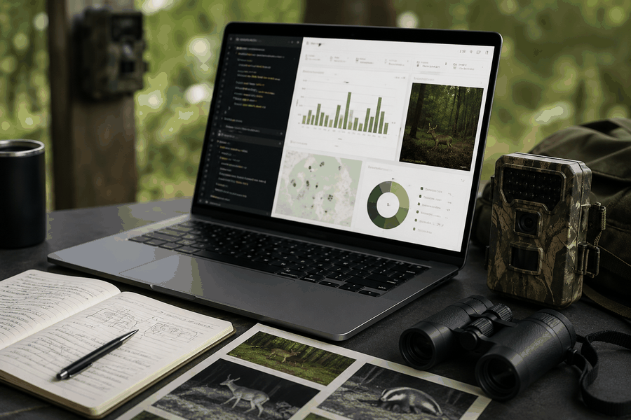

This page presents publications, workshops, and training activities
related to camtrapReport. It provides a central place for
users to find scientific outputs, learning materials, and opportunities
to engage with the camtrapReport community.
Publications
The following publications present camtrapReport or
related workflows for standardising and automating camera-trap data
reporting.

Conference abstract
Automating camera-trap data reporting for wildlife monitoring
Ebrahimi, E., Stubbe, A., Dijkhuis, L., de Knegt, H., Liefting, Y., & Jansen, P. A. (2025). Automating camera-trap data reporting for wildlife monitoring. IX European Congress of Mammalogy (ECM9), Patras, Greece, 31 March–4 April 2025.
Conference abstract
camtrapReport: An R package for automating camera-trap data reporting for wildlife monitoring
Ebrahimi, E., & Jansen, P. A. (2026). camtrapReport: An R package for automating camera-trap data reporting for wildlife monitoring. The International Biogeography Society 12th Biennial Conference, Aarhus, Denmark, 5–10 January 2026.

Conference abstract
camtrapReport: An R package for automating camera-trap data reporting for wildlife monitoring
Ebrahimi, E., Stubbe, A., Dijkhuis, L. R., Liefting, Y., de Knegt, H. J., & Jansen, P. A. (2026). camtrapReport: An R package for automating camera-trap data reporting for wildlife monitoring. Netherlands Annual Ecology Meeting (NAEM 2026), Lunteren, the Netherlands, 10–11 February 2026.
Workshops and training
The following workshops and training activities have been held so far
to introduce camtrapReport and demonstrate its main
functionality. Public workshop materials are not currently available, so
these entries document the completed events rather than linking to
unpublished resources. Upcoming workshops and public training materials
will be added here when available.
Training workshop
An overview of the functionality of camtrapReport: An R
package for automating camera-trap data reporting in wildlife
monitoring
Host: TrapLab community, Utrecht University, Utrecht,
the Netherlands
Date: 4 May 2026

Technical workshop
camtrapReport: A modular R package for automating
camera-trap data reporting in wildlife monitoring
Host: Research Institute for Nature and Forest (INBO),
Brussels, Belgium
Date: 29 May 2026
Community and contact
camtrapReport is developed for the camera-trap research
and conservation community. Organisations, research teams, and
camera-trap networks interested in arranging workshops, exploring
collaboration opportunities, testing the package, or contributing new
camtrapReport modules are welcome to get in touch.
Contact Elham Ebrahimi by email or connect via LinkedIn.